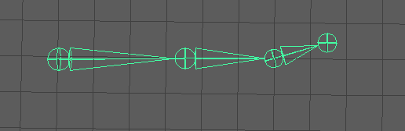

提示： 本主题介绍如何将 IK 控制柄添加到现有关节链，但是也可以在创建关节链时创建 IK 控制柄。为此，请参见创建带有 IK 控制柄的关节链。
在现有关节链上创建 IK 控制柄
- 在“装备”(Rigging)菜单集中执行以下操作之一：
- 选择。
- 如果要先更改“IK 控制柄设置”(IK Handle Settings)，请选择“骨架 > 创建 IK 控制柄”(Skeleton > Create IK Handle) >
 。有关设置信息，请参见 IK 控制柄工具。
。有关设置信息，请参见 IK 控制柄工具。
例如，您可以使用“IK 控制柄工具设置”(IK Handle Tool Settings)来选择要用于计算链中关节方向的 IK 解算器。
光标将变为工具十字线。
- 单击要用作 IK 控制柄起始关节的关节。
- 单击要用作 IK 控制柄末关节的关节。
IK 控制柄将显示在关节链上，连接所选的起始关节和末关节。
